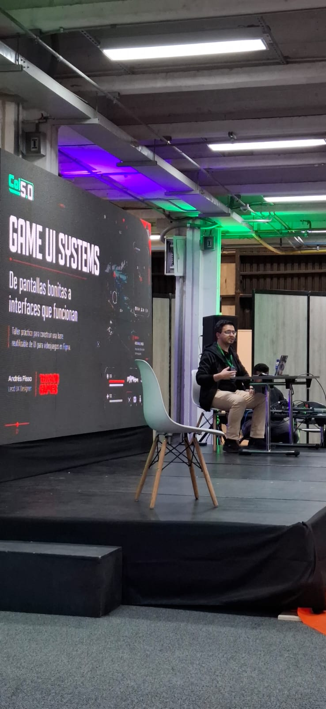
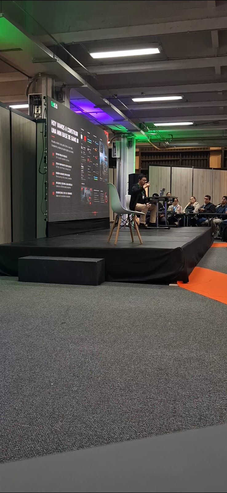
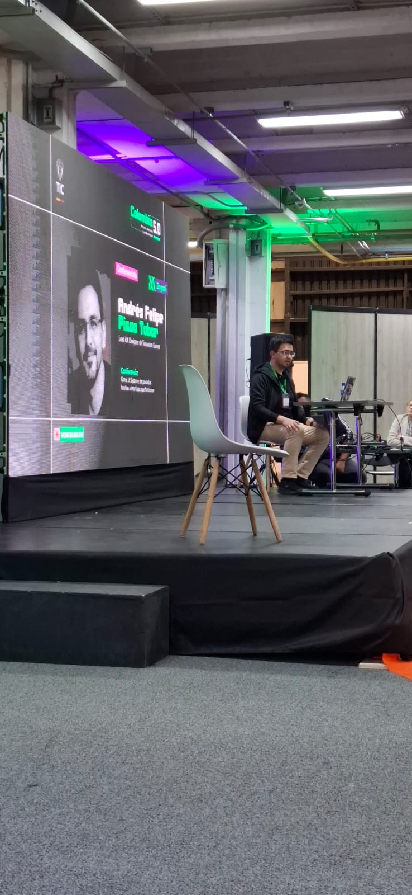
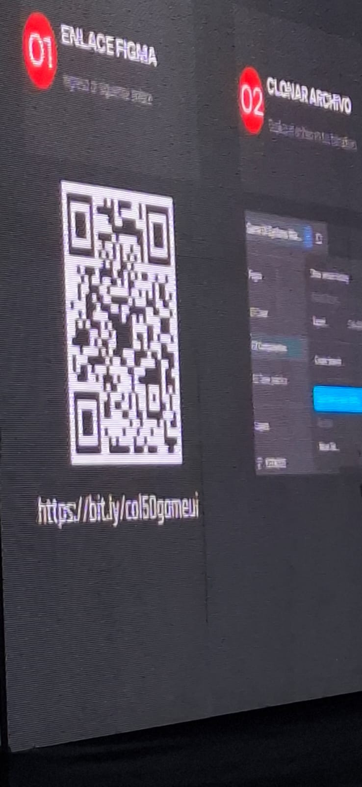
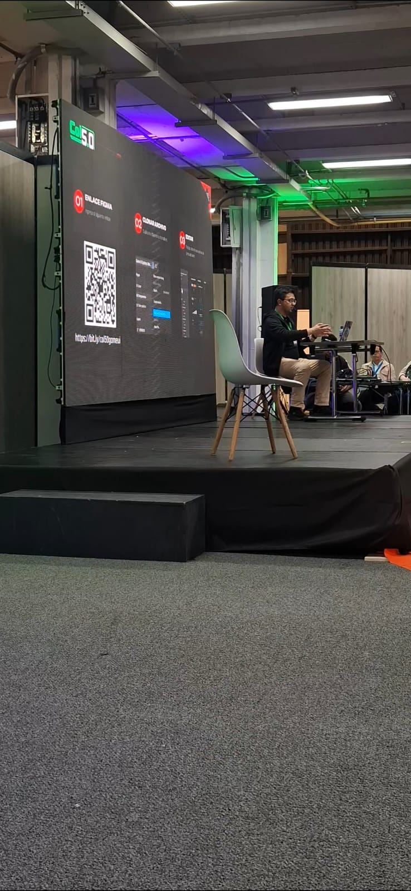

Game UI Systems: De Pantallas Bonitas a Interfaces que Funcionan
Andrés Felipe Pisso Tobar
Lead UI Designer — Teravision Games
Tema Principal
Diseño de sistemas de interfaz de usuario para videojuegos: accesibilidad, sistemas de diseño y toma de decisiones efectivas en equipos de desarrollo.
Andrés Felipe Pisso Tobar, Lead UI Designer de Teravision Games, presentó un taller práctico orientado a construir una base reutilizable de UI para videojuegos en Figma. La sesión partió de un concepto clave: una interfaz no debe ser solo visualmente atractiva, sino funcional y comunicativa.
El conferencista explicó cómo definir una notificación de pantalla en tres estados diferentes (inactivo, activo y de error), mostrando cómo cada estado transmite información clara al jugador sin interrumpir la experiencia. Combinó principios de accesibilidad, pensamiento de producto y sistemas de diseño con el objetivo de reducir la fricción del usuario, aportar claridad visual y ayudar a los equipos de desarrollo a tomar decisiones de diseño mucho más efectivas y consistentes.
El taller incluyó una demostración en vivo donde los asistentes podían acceder al archivo de Figma mediante el enlace https://bit.ly/col50gameui, clonar el archivo y editarlo en tiempo real junto con el instructor. Esta metodología práctica permitió entender cómo un sistema de diseño bien estructurado acelera la producción y mejora la comunicación entre diseñadores y desarrolladores.
Andrés Felipe Pisso Tobar, Lead UI Designer at Teravision Games, delivered a hands-on workshop focused on building a reusable UI design system for video games using Figma. The session centered on a key concept: an interface should not merely look attractive — it must be functional and communicative.
The speaker demonstrated how to define an on-screen notification across three distinct states (inactive, active, and error), showing how each state conveys clear information to the player without disrupting the game experience. He combined accessibility principles, product thinking, and design systems to reduce user friction, provide visual clarity, and help development teams make more effective and consistent design decisions.
The workshop included a live demonstration where attendees could access the Figma file via https://bit.ly/col50gameui, clone it, and edit it in real time alongside the instructor. This hands-on methodology illustrated how a well-structured design system accelerates production and improves communication between designers and developers.
// Video del taller
// Galería fotográfica




